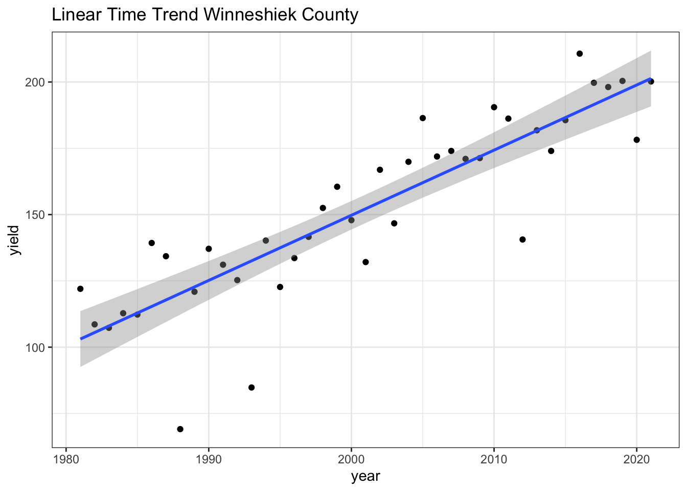
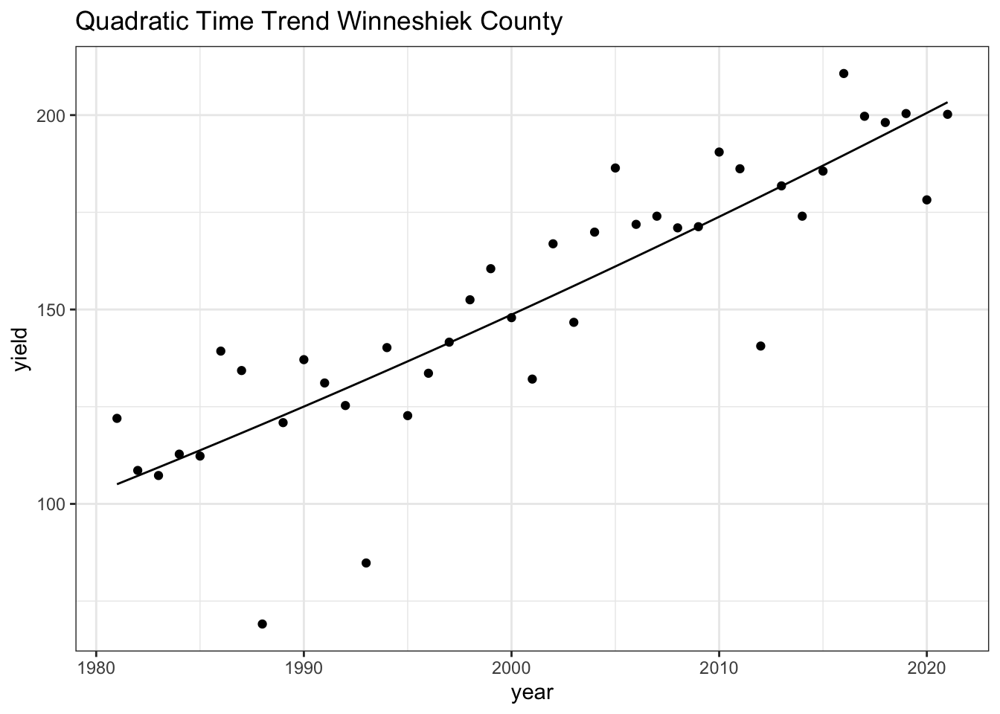
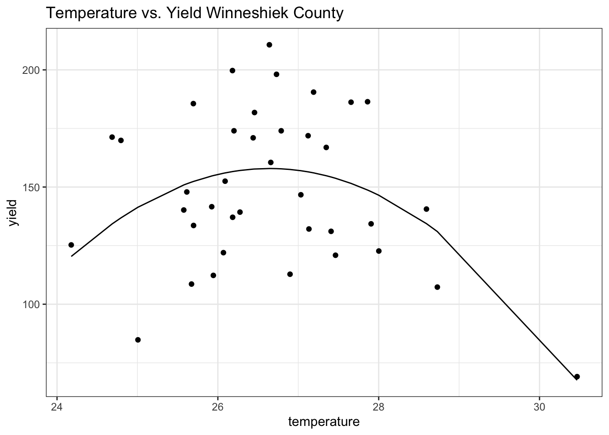
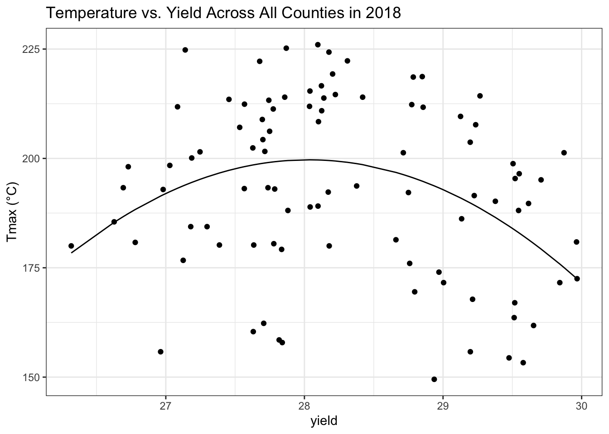
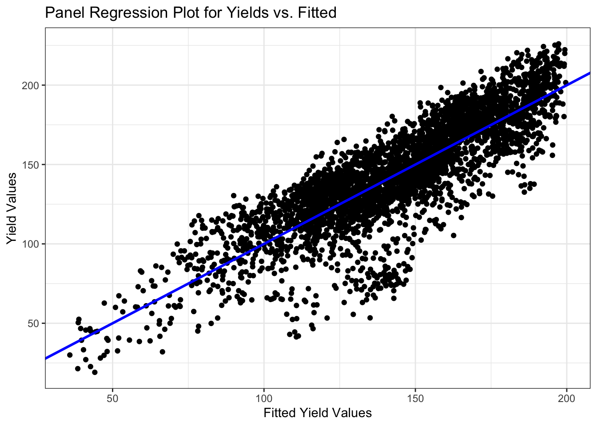

Chapter 6 Corn Analysis
In this last assignment, I used temperature from the PRISM database and corn yield data from the NASS database to create linear regression models. We looked at summer and winter temperature trends to explore the relationship of summer temperatures and corn yield.
6.1 Weather Data Analysis
6.1.1 Load the PRISM daily maximum temperatures
#daily max temperature
#dimensions: counties by days by years
prism <- readMat("/Users/maddiebean21/Desktop/School/ESS580A7/bookdown_final/data/05-hw-corn/prismiowa.mat")
# look at county 1
t_1981_c1 <- prism$tmaxdaily.iowa[1,,1]
t_1981_c1[366]## [1] NaNplot(1:366, t_1981_c1, type = "l")
#plotting
ggplot() +
geom_line(mapping = aes(x=1:366, y = t_1981_c1)) +
theme_bw() +
xlab("day of year") +
ylab("daily maximum temperature (°C)") +
ggtitle("Daily Maximum Temperature, Iowa County #1")## Warning: Removed 1 row(s) containing missing values (geom_path).
# assign dimension names to tmax matrix
dimnames(prism$tmaxdaily.iowa) <- list(prism$COUNTYFP, 1:366, prism$years)
# converted 3d matrix into a data frame
tmaxdf <- as.data.frame.table(prism$tmaxdaily.iowa)
# relabel the columns
colnames(tmaxdf) <- c("countyfp","doy","year","tmax")
tmaxdf <- tibble(tmaxdf)6.2 Temperature trends
6.2.1 Summer temperature trends: Winneshiek County
# making the data numeric
tmaxdf$doy <- as.numeric(tmaxdf$doy)
tmaxdf$year <- as.numeric(as.character(tmaxdf$year))
winnesummer <- tmaxdf %>%
filter(countyfp==191 & doy >= 152 & doy <= 243) %>%
group_by(year) %>%
summarize(meantmax = mean(tmax))
ggplot(winnesummer, mapping = aes(x = year, y = meantmax)) +
geom_point() +
theme_bw() +
labs(x = "year", y = "Tmax (°C)") +
geom_smooth(method = lm)## `geom_smooth()` using formula 'y ~ x'
lm_summertmax <- lm(meantmax ~ year, winnesummer)
summary(lm_summertmax)##
## Call:
## lm(formula = meantmax ~ year, data = winnesummer)
##
## Residuals:
## Min 1Q Median 3Q Max
## -2.5189 -0.7867 -0.0341 0.6859 3.7415
##
## Coefficients:
## Estimate Std. Error t value Pr(>|t|)
## (Intercept) 41.57670 36.44848 1.141 0.262
## year -0.00747 0.01823 -0.410 0.684
##
## Residual standard error: 1.232 on 36 degrees of freedom
## Multiple R-squared: 0.004644, Adjusted R-squared: -0.02301
## F-statistic: 0.168 on 1 and 36 DF, p-value: 0.68446.2.2 Winter Temperatures - Winneshiek County
winnewinter <- tmaxdf %>%
filter(countyfp==191 & (doy <= 59 | doy >= 335) & !is.na(tmax)) %>%
group_by(year) %>%
summarize(meantmax = mean(tmax))
ggplot(winnewinter, mapping = aes(x = year, y = meantmax)) +
geom_point() +
theme_bw() +
labs(x = "year", y = "Tmax (°C)") +
geom_smooth(method = lm)## `geom_smooth()` using formula 'y ~ x'
lm_wintertmax <- lm(meantmax ~ year, winnewinter)
summary(lm_wintertmax)##
## Call:
## lm(formula = meantmax ~ year, data = winnewinter)
##
## Residuals:
## Min 1Q Median 3Q Max
## -3.5978 -1.4917 -0.3053 1.3778 4.5709
##
## Coefficients:
## Estimate Std. Error t value Pr(>|t|)
## (Intercept) -29.87825 60.48100 -0.494 0.624
## year 0.01368 0.03025 0.452 0.654
##
## Residual standard error: 2.045 on 36 degrees of freedom
## Multiple R-squared: 0.005652, Adjusted R-squared: -0.02197
## F-statistic: 0.2046 on 1 and 36 DF, p-value: 0.65376.2.3 Multiple regression – Quadratic time trend
winnewinter$yearsq <- winnewinter$year^2
lm_wintertmaxquad <- lm(meantmax ~ year + yearsq, winnewinter)
summary(lm_wintertmaxquad)##
## Call:
## lm(formula = meantmax ~ year + yearsq, data = winnewinter)
##
## Residuals:
## Min 1Q Median 3Q Max
## -3.3539 -1.2985 -0.2813 1.4055 4.2620
##
## Coefficients:
## Estimate Std. Error t value Pr(>|t|)
## (Intercept) -1.086e+04 1.238e+04 -0.877 0.386
## year 1.085e+01 1.239e+01 0.876 0.387
## yearsq -2.710e-03 3.097e-03 -0.875 0.388
##
## Residual standard error: 2.051 on 35 degrees of freedom
## Multiple R-squared: 0.02694, Adjusted R-squared: -0.02867
## F-statistic: 0.4845 on 2 and 35 DF, p-value: 0.6201winnewinter$fitted <- lm_wintertmaxquad$fitted.values
ggplot(winnewinter) +
geom_point(mapping = aes(x = year, y = meantmax)) +
geom_line(mapping = aes(x = year, y = fitted)) +
theme_bw() +
labs(x = "year", y = "tmax")
6.2.4 Download NASS corn yield data
# set our API key with NASS
nassqs_auth(key = "693A4922-893D-3AF4-A23B-6288B220EC7E")
# parameters to query on
params <- list(commodity_desc = "CORN", util_practice_desc = "GRAIN", prodn_practice_desc = "ALL PRODUCTION PRACTICES", year__GE = 1981, state_alpha = "IA")
# download
cornyieldsall <- nassqs_yields(params)
cornyieldsall$county_ansi <- as.numeric(cornyieldsall$county_ansi)
cornyieldsall$yield <- as.numeric(cornyieldsall$Value)
# clean and filter this dataset
cornyields <- select(cornyieldsall, county_ansi, county_name, yield, year) %>%
filter(!is.na(county_ansi) & !is.na(yield))
cornyields <- tibble(cornyields)6.3 Extract Winneshiek County corn yields, fit a linear time trend, make a plot.
#creating an object for Winneshiek County corn yields
winnecornyield <- cornyields %>%
filter(county_ansi=="191")
#fitting a linear time trend
lm_winnecornyield <- lm(yield ~ year, data = winnecornyield)
summary(lm_winnecornyield)##
## Call:
## lm(formula = yield ~ year, data = winnecornyield)
##
## Residuals:
## Min 1Q Median 3Q Max
## -51.163 -1.841 2.363 9.437 24.376
##
## Coefficients:
## Estimate Std. Error t value Pr(>|t|)
## (Intercept) -4763.290 448.286 -10.63 4.46e-13 ***
## year 2.457 0.224 10.96 1.77e-13 ***
## ---
## Signif. codes: 0 '***' 0.001 '**' 0.01 '*' 0.05 '.' 0.1 ' ' 1
##
## Residual standard error: 16.97 on 39 degrees of freedom
## Multiple R-squared: 0.7551, Adjusted R-squared: 0.7488
## F-statistic: 120.2 on 1 and 39 DF, p-value: 1.767e-13#plotting Winneshiek's corn yields with linear trend
ggplot(winnecornyield, mapping = aes(x = year, y = yield)) +
geom_point() +
theme_bw() +
labs(x = "year", y = "yield", title = "Linear Time Trend Winneshiek County") +
geom_smooth(method = lm)## `geom_smooth()` using formula 'y ~ x'
The plot shows that the data following relatively close to the trend line, giving us a significant time trend. The p-value given from the linear model is significantly below 0.05, which tells us that there is a strong relationship between year and yield in Winneshiek County.
6.4 Fitting a quadratic time trend (i.e., year + year^2) and making a plot.
#adding years^2 column to the winneshiek corn yield data set
winnecornyield$yearsq <- winnecornyield$year^2
#creating a linear model for the quadratic winneshiek corn yield data set
lm_winnecornyieldquad <- lm(yield ~ year + yearsq, winnecornyield)
summary(lm_winnecornyieldquad)##
## Call:
## lm(formula = yield ~ year + yearsq, data = winnecornyield)
##
## Residuals:
## Min 1Q Median 3Q Max
## -51.384 -3.115 1.388 9.743 25.324
##
## Coefficients:
## Estimate Std. Error t value Pr(>|t|)
## (Intercept) 2.583e+04 8.580e+04 0.301 0.765
## year -2.812e+01 8.576e+01 -0.328 0.745
## yearsq 7.641e-03 2.143e-02 0.357 0.723
##
## Residual standard error: 17.17 on 38 degrees of freedom
## Multiple R-squared: 0.7559, Adjusted R-squared: 0.7431
## F-statistic: 58.84 on 2 and 38 DF, p-value: 2.311e-12#adding fitted values column to the winneshiek corn yield data set
winnecornyield$fitted <- lm_winnecornyieldquad$fitted.values
#Plotting the quadratic time trend
ggplot(winnecornyield) +
geom_point(mapping = aes(x = year, y = yield)) +
geom_line(mapping = aes(x = year, y = fitted)) +
theme_bw() +
labs(x = "year", y = "yield", title = "Quadratic Time Trend Winneshiek County")
The trend line/slope is still increasing, not showing us an evidence of slowing down yield.
6.5 Time Series: Analyzing the relationship between temperature and yields for the Winneshiek County time series.
#combining summer and corn yield data sets
winnecombinedsummer <- inner_join(winnecornyield, winnesummer)## Joining, by = "year"#adding column for squared temperature
winnecombinedsummer$tempsq <- winnecombinedsummer$meantmax^2
#linear model
lm_comb_summer_quad <- lm(yield ~ meantmax + tempsq, winnecombinedsummer)
summary(lm_comb_summer_quad)##
## Call:
## lm(formula = yield ~ meantmax + tempsq, data = winnecombinedsummer)
##
## Residuals:
## Min 1Q Median 3Q Max
## -56.587 -22.262 -0.982 22.409 52.798
##
## Coefficients:
## Estimate Std. Error t value Pr(>|t|)
## (Intercept) -4223.604 1446.639 -2.920 0.00609 **
## meantmax 328.918 107.068 3.072 0.00410 **
## tempsq -6.173 1.979 -3.119 0.00362 **
## ---
## Signif. codes: 0 '***' 0.001 '**' 0.01 '*' 0.05 '.' 0.1 ' ' 1
##
## Residual standard error: 29.5 on 35 degrees of freedom
## Multiple R-squared: 0.2417, Adjusted R-squared: 0.1984
## F-statistic: 5.579 on 2 and 35 DF, p-value: 0.007887winnecombinedsummer$quadfitted <- lm_comb_summer_quad$fitted.values
#plotting the data together
ggplot(winnecombinedsummer) +
geom_point(mapping = aes(x = meantmax, y = yield)) +
geom_line(mapping = aes(x=meantmax, y=quadfitted))+
theme_bw() +
labs(x = "temperature", y = "yield", title = "Temperature vs. Yield Winneshiek County")
For this plot, I used data on yield and summer average maximum temperatures. Adding tmax^2 to my model is helpful because it helps us visualize that more average temperatures produce that highest yield, where the extreme low or high temp do not produce high yields. Plotting years on this graph would not be beneficial because it would only show the yield increasing as the years pass. The p-value is 0.007887, which is less than alpha, meaning that there is a significant evidence that when temperature is between 26 - 28 degrees Celsius, yields are the highest.
6.6 Cross-Section: Analyzing the relationship between temperature and yield across all counties in 2018.
#creating object for corn yields for 2018
yields18 <- cornyields %>%
filter(year == 2018) %>%
group_by(county_name) %>%
unique() %>%
filter(!is.na(county_ansi))
#creating object for temperature for 2018
temp18 <- tmaxdf %>%
group_by(countyfp) %>%
filter(year == 2018) %>%
filter(doy >= 152 & doy <= 243) %>%
summarize(meantmax = mean(tmax)) %>%
rename(county_ansi = "countyfp")
#making counties numeric
temp18$county_ansi <- as.numeric(as.character(temp18$county_ansi))
#pulling temperature and yield across all counties in 2018
combo18 <- inner_join(yields18, temp18, by = 'county_ansi')
#adding column for squared mean temp
combo18$meantmaxsq <- combo18$meantmax^2
#linear model
lm_combo18 <- lm(yield~meantmax + meantmaxsq, data = combo18)
summary(lm_combo18)##
## Call:
## lm(formula = yield ~ meantmax + meantmaxsq, data = combo18)
##
## Residuals:
## Min 1Q Median 3Q Max
## -44.221 -15.399 5.007 14.541 30.879
##
## Coefficients:
## Estimate Std. Error t value Pr(>|t|)
## (Intercept) -5501.602 1860.830 -2.957 0.00397 **
## meantmax 406.789 131.493 3.094 0.00263 **
## meantmaxsq -7.256 2.321 -3.126 0.00239 **
## ---
## Signif. codes: 0 '***' 0.001 '**' 0.01 '*' 0.05 '.' 0.1 ' ' 1
##
## Residual standard error: 18.75 on 90 degrees of freedom
## Multiple R-squared: 0.1317, Adjusted R-squared: 0.1124
## F-statistic: 6.827 on 2 and 90 DF, p-value: 0.001736#adding columns for fitted values and squared temp
combo18$quadfitted <- lm_combo18$fitted.values
#plotting the data
ggplot(combo18)+
geom_point(mapping = aes(x = meantmax, y = yield))+
geom_line(mapping = aes(x = meantmax, y = quadfitted))+
theme_bw() +
labs(x = "yield", y = "Tmax (°C)", title = "Temperature vs. Yield Across All Counties in 2018")
The p-value that we get from running the linear model, is 0.06308, which is larger than alpha. This means that there is not enough evidence to support that there is a correlation between temperature and yield across all counties in 2018.
6.7 Panel: Plot comparing actual and fitted yields and interpret the results of your model.
#creating a summer temperature across counties
summertemp <- tmaxdf %>%
filter(doy >= 152 & doy <= 243) %>%
group_by(year, countyfp) %>%
rename(county_ansi = countyfp)%>%
summarize(meantmax = mean(tmax))## `summarise()` has grouped output by 'year'. You can override using the `.groups` argument.#changing the counties to a factor
cornyields$county_ansi <- as.factor(cornyields$county_ansi)
summertemp$county_ansi <- as.factor(summertemp$county_ansi)
#joining yield and temperature together
countysummer <- inner_join(summertemp, cornyields) %>%
unique()## Joining, by = c("year", "county_ansi")head(countysummer)## # A tibble: 6 × 5
## # Groups: year [1]
## year county_ansi meantmax county_name yield
## <dbl> <fct> <dbl> <chr> <dbl>
## 1 1981 93 27.5 IDA 109.
## 2 1981 147 27.1 PALO ALTO 137.
## 3 1981 13 26.6 BLACK HAWK 132.
## 4 1981 99 27.8 JASPER 124.
## 5 1981 195 26.5 WORTH 119.
## 6 1981 67 26.9 FLOYD 129.#adding squared mean to columns
countysummer$meantmaxsq <- countysummer$meantmax^2
#creating a linear model
lm_countysummer <- lm(yield ~ meantmax + meantmaxsq +county_ansi + year, countysummer)
summary(lm_countysummer)##
## Call:
## lm(formula = yield ~ meantmax + meantmaxsq + county_ansi + year,
## data = countysummer)
##
## Residuals:
## Min 1Q Median 3Q Max
## -81.645 -9.720 1.924 13.232 40.409
##
## Coefficients:
## Estimate Std. Error t value Pr(>|t|)
## (Intercept) -5.815e+03 9.802e+01 -59.319 < 2e-16 ***
## meantmax 1.182e+02 6.108e+00 19.352 < 2e-16 ***
## meantmaxsq -2.225e+00 1.085e-01 -20.503 < 2e-16 ***
## county_ansi147 -4.601e+00 4.322e+00 -1.065 0.287100
## county_ansi13 -4.573e+00 4.322e+00 -1.058 0.290041
## county_ansi99 2.537e+00 4.322e+00 0.587 0.557264
## county_ansi195 -5.740e+00 4.339e+00 -1.323 0.186000
## county_ansi67 -7.072e+00 4.324e+00 -1.636 0.102029
## county_ansi107 -9.660e+00 4.325e+00 -2.233 0.025596 *
## county_ansi15 3.120e+00 4.322e+00 0.722 0.470379
## county_ansi57 -1.366e+00 4.327e+00 -0.316 0.752212
## county_ansi127 2.318e+00 4.321e+00 0.536 0.591719
## county_ansi123 -3.711e+00 4.325e+00 -0.858 0.390951
## county_ansi81 -3.157e+00 4.327e+00 -0.729 0.465744
## county_ansi129 -1.637e+00 4.396e+00 -0.372 0.709703
## county_ansi1 -1.186e+01 4.325e+00 -2.743 0.006124 **
## county_ansi175 -2.341e+01 4.354e+00 -5.377 8.03e-08 ***
## county_ansi19 -4.212e+00 4.324e+00 -0.974 0.330092
## county_ansi37 -9.693e+00 4.328e+00 -2.240 0.025182 *
## county_ansi109 3.589e-01 4.324e+00 0.083 0.933863
## county_ansi165 -4.189e+00 4.322e+00 -0.969 0.332408
## county_ansi51 -2.644e+01 4.360e+00 -6.063 1.47e-09 ***
## county_ansi69 -5.518e-01 4.322e+00 -0.128 0.898414
## county_ansi137 -5.977e+00 4.330e+00 -1.381 0.167514
## county_ansi9 -6.795e+00 4.322e+00 -1.572 0.115958
## county_ansi87 -6.583e+00 4.328e+00 -1.521 0.128366
## county_ansi5 -9.147e+00 4.329e+00 -2.113 0.034697 *
## county_ansi189 -3.627e+00 4.330e+00 -0.838 0.402306
## county_ansi53 -2.790e+01 4.356e+00 -6.404 1.70e-10 ***
## county_ansi121 -1.445e+01 4.324e+00 -3.342 0.000841 ***
## county_ansi191 -7.295e+00 4.335e+00 -1.683 0.092484 .
## county_ansi71 1.715e+00 4.344e+00 0.395 0.692933
## county_ansi135 -2.771e+01 4.354e+00 -6.365 2.20e-10 ***
## county_ansi23 -2.774e+00 4.321e+00 -0.642 0.520945
## county_ansi179 -1.508e+01 4.358e+00 -3.461 0.000544 ***
## county_ansi11 -4.677e+00 4.321e+00 -1.082 0.279184
## county_ansi193 -9.064e+00 4.323e+00 -2.097 0.036096 *
## county_ansi117 -3.354e+01 4.385e+00 -7.650 2.56e-14 ***
## county_ansi139 -3.580e+00 4.324e+00 -0.828 0.407827
## county_ansi141 2.369e+00 4.321e+00 0.548 0.583576
## county_ansi3 -1.639e+01 4.325e+00 -3.790 0.000153 ***
## county_ansi29 -5.718e+00 4.325e+00 -1.322 0.186209
## county_ansi7 -3.014e+01 4.355e+00 -6.922 5.22e-12 ***
## county_ansi95 -4.648e+00 4.322e+00 -1.075 0.282230
## county_ansi77 -8.484e+00 4.324e+00 -1.962 0.049814 *
## county_ansi55 -2.440e+00 4.326e+00 -0.564 0.572813
## county_ansi91 -1.981e+00 4.324e+00 -0.458 0.646825
## county_ansi79 1.290e+00 4.321e+00 0.299 0.765255
## county_ansi59 -8.957e+00 4.325e+00 -2.071 0.038446 *
## county_ansi27 -2.196e+00 4.321e+00 -0.508 0.611316
## county_ansi187 2.350e+00 4.321e+00 0.544 0.586618
## county_ansi41 -5.251e+00 4.322e+00 -1.215 0.224409
## county_ansi45 -1.312e+00 4.321e+00 -0.304 0.761484
## county_ansi153 2.166e+00 4.325e+00 0.501 0.616434
## county_ansi65 -4.543e+00 4.329e+00 -1.050 0.293954
## county_ansi131 -4.578e+00 4.336e+00 -1.056 0.291223
## county_ansi143 -3.119e+00 4.326e+00 -0.721 0.470936
## county_ansi197 -3.072e-01 4.322e+00 -0.071 0.943331
## county_ansi133 -1.106e+01 4.328e+00 -2.556 0.010618 *
## county_ansi83 2.088e+00 4.321e+00 0.483 0.629024
## county_ansi35 2.034e+00 4.321e+00 0.471 0.637848
## county_ansi101 -1.133e+01 4.335e+00 -2.613 0.009012 **
## county_ansi21 -3.222e+00 4.321e+00 -0.746 0.455896
## county_ansi105 -4.132e+00 4.322e+00 -0.956 0.339059
## county_ansi63 -4.630e+00 4.328e+00 -1.070 0.284740
## county_ansi125 -9.943e+00 4.325e+00 -2.299 0.021566 *
## county_ansi157 -1.315e+00 4.323e+00 -0.304 0.761057
## county_ansi155 -5.942e-01 4.356e+00 -0.136 0.891498
## county_ansi169 -6.458e-01 4.321e+00 -0.149 0.881201
## county_ansi145 -1.223e+01 4.330e+00 -2.824 0.004764 **
## county_ansi167 3.716e+00 4.321e+00 0.860 0.389950
## county_ansi159 -3.257e+01 4.325e+00 -7.529 6.38e-14 ***
## county_ansi89 -1.092e+01 4.346e+00 -2.513 0.012022 *
## county_ansi115 -4.533e+00 4.329e+00 -1.047 0.295100
## county_ansi173 -2.591e+01 4.357e+00 -5.947 2.99e-09 ***
## county_ansi49 -1.050e+00 4.324e+00 -0.243 0.808084
## county_ansi151 -3.603e-01 4.321e+00 -0.083 0.933548
## county_ansi39 -3.591e+01 4.354e+00 -8.246 2.26e-16 ***
## county_ansi17 -5.353e-01 4.323e+00 -0.124 0.901456
## county_ansi97 -1.325e+01 4.322e+00 -3.065 0.002190 **
## county_ansi85 -4.971e+00 4.327e+00 -1.149 0.250644
## county_ansi149 -4.510e+00 4.322e+00 -1.044 0.296759
## county_ansi185 -3.376e+01 4.353e+00 -7.754 1.15e-14 ***
## county_ansi47 -5.335e+00 4.321e+00 -1.235 0.217050
## county_ansi111 -1.008e+01 4.335e+00 -2.326 0.020060 *
## county_ansi177 -1.714e+01 4.343e+00 -3.947 8.08e-05 ***
## county_ansi75 -3.522e-01 4.321e+00 -0.081 0.935055
## county_ansi181 -1.402e+01 4.325e+00 -3.242 0.001198 **
## county_ansi31 3.927e+00 4.321e+00 0.909 0.363477
## county_ansi25 -1.476e+00 4.321e+00 -0.342 0.732672
## county_ansi61 -2.068e+00 4.328e+00 -0.478 0.632814
## county_ansi113 -5.448e+00 4.321e+00 -1.261 0.207502
## county_ansi183 -1.446e+00 4.328e+00 -0.334 0.738278
## county_ansi33 -7.281e+00 4.326e+00 -1.683 0.092484 .
## county_ansi43 -2.998e+00 4.326e+00 -0.693 0.488271
## county_ansi73 2.754e+00 4.323e+00 0.637 0.524176
## county_ansi161 -2.473e+00 4.321e+00 -0.572 0.567164
## county_ansi103 -7.483e+00 4.322e+00 -1.731 0.083476 .
## county_ansi119 -2.534e+00 4.321e+00 -0.586 0.557604
## county_ansi163 4.415e+00 4.321e+00 1.022 0.306959
## county_ansi171 -2.122e+00 4.321e+00 -0.491 0.623334
## year 2.203e+00 2.836e-02 77.664 < 2e-16 ***
## ---
## Signif. codes: 0 '***' 0.001 '**' 0.01 '*' 0.05 '.' 0.1 ' ' 1
##
## Residual standard error: 18.83 on 3646 degrees of freedom
## Multiple R-squared: 0.7207, Adjusted R-squared: 0.7129
## F-statistic: 93.13 on 101 and 3646 DF, p-value: < 2.2e-16countysummer$fittedyield <- lm_countysummer$fitted.values
#plotting the data
ggplot(countysummer) +
geom_point(mapping = aes(x = fittedyield , y = yield))+
theme_bw()+
geom_abline(color = "blue", size = 1)+
labs(title = "Panel Regression Plot for Yields vs. Fitted", x="Fitted Yield Values", y = "Yield Values")
One way to leverage multiple time series is to group all data into what is called a “panel” regression. I converted the county ID code (“countyfp” or “county_ansi”) into factor using as.factor, then included this variable in a regression using all counties’ yield and summer temperature data. The linear model gives us an R squared value of 0.7207. This is a relatively high R squared value, which means that the data has a stronger goodness of fit. Therefore, the fitted values are well predicted in comparison to the actual yields. Because the data closely follows a 45 degree angle we can come to this conclusion.
6.8 Soybeans: Time series plot
# set our API key with NASS
nassqs_auth(key = "693A4922-893D-3AF4-A23B-6288B220EC7E")
# parameters to query on
params2 <- list(commodity_desc = "SOYBEANS", statisticcat_desc="YIELD", prodn_practice_desc = "ALL PRODUCTION PRACTICES", year__GE = 1981, state_alpha = "IA")
soybeanyieldsall <- nassqs_yields(params2)
soybeanyieldsall$county_ansi <- as.numeric(soybeanyieldsall$county_ansi)
soybeanyieldsall$yield <- as.numeric(soybeanyieldsall$Value)
# clean and filter this dataset
soyyields <- select(soybeanyieldsall, county_ansi, county_name, yield, year) %>%
filter(!is.na(county_ansi) & !is.na(yield))
soyyields <- tibble(soyyields)
winnesoyyield <- soyyields %>%
filter(county_ansi=="191")
#fitting a linear time trend
lm_winnesoyyield <- lm(yield ~ year, data = winnesoyyield)
summary(lm_winnesoyyield)
#plotting Winneshiek's soybean yields with linear trend
ggplot(winnesoyyield, mapping = aes(x = year, y = yield)) +
geom_point() +
theme_bw() +
labs(x = "year", y = "yield", title = ) +
geom_smooth(method = lm)
I downloaded NASS data on soybean yields and explored a time series relationship for Winneshiek county.